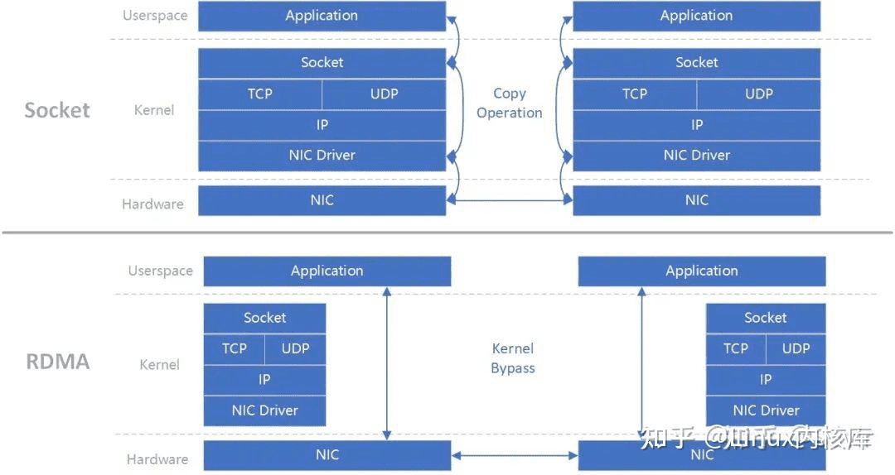

硬件学习：RDMA
结合豆包学习，参考文章：https://zhuanlan.zhihu.com/p/648805252
DMA
DMA 相比不用多说，外设对内存的读写过程可以不用CPU参与而直接进行，有了它以后，当我们的网卡想要从内存中拷贝数据时，除了一些必要的控制命令外，整个数据复制过程都是由DMA控制器完成的。
过程跟CPU复制是一样的，只不过这次是把内存中的数据通过总线复制到DMA控制器内部的寄存器中，再复制到I/O设备的存储空间中。CPU除了关注一下这个过程的开始和结束以外，其他时间可以去做其他事情。

RDMA
RDMA（ Remote Direct Memory Access ）意为远程直接地址访问，通过RDMA，本端节点可以“直接”访问远端节点的内存。重点在于可以绕过 TCP/IP网络协议栈，大部分工作有硬件来去完成。
下图是传统网络中，左边的节点在内存用户空间中的数据，需要经过CPU拷贝到内核空间的缓冲区中，然后才可以被网卡访问，这期间数据会经过软件实现的TCP/IP协议栈，加上各层头部和校验码，比如TCP头，IP头等。网卡通过DMA拷贝内核中的数据到网卡内部的缓冲区中，进行处理后通过物理链路发送给对端。
对端收到数据后，会进行相反的过程：从网卡内部存储空间，将数据通过DMA拷贝到内存内核空间的缓冲区中，然后CPU会通过TCP/IP协议栈对其进行解析，将数据取出来拷贝到用户空间中。

而有了 RDMA 之后，两端的CPU几乎不用参与数据传输过程（只参与控制面）。本端的网卡直接从内存的用户空间DMA拷贝数据到内部存储空间，然后硬件进行各层报文的组装后，通过物理链路发送到对端网卡。对端的RDMA网卡收到数据后，剥离各层报文头和校验码，通过DMA将数据直接拷贝到用户空间内存中。

具体优势
RDMA主要应用在高性能计算（HPC）领域和大型数据中心当中，并且设备相对普通以太网卡要昂贵不少（比如Mellanox公司的Connext-X 5 100Gb PCIe网卡市价在4000元以上）。由于使用场景和价格的原因，RDMA与普通开发者和消费者的距离较远，目前主要是一些大型互联网企业在部署和使用。
RDMA 的核心优势（后面会分析），主要是直接用户层传递，减少了来回数据拷贝、系统调用（导致上下文切换）等过程。

- 0拷贝：指的是不需要在用户空间和内核空间中来回复制数据。
- 内核Bypass：指的是IO（数据）流程可以绕过内核，即在用户层就可以把数据准备好并通知硬件准备发送和接收。避免了系统调用和上下文切换的开销。
具体分析
上面大部分内容是复制参考文章。读到这里时，我就困惑了：这是怎么做到的？这样也太危险了？下面进行说明。
核心流程
RDMA 零拷贝的核心：内存注册（MR, Memory Region）+ 硬件内核旁路，使用 RDMA 流程：
-
前置授权：用户进程发起内存注册
应用程序在收发数据前，先通过 RDMA 用户态驱动（libibverbs），向内核态的 RDMA 驱动，申请注册一段自己的用户空间内存，作为收发缓冲区。这也是回答了我之前担心直接用户态发送很危险，事实上相当于是用户要同意这样做，划分出一段空间给 RDMA 手法才可以。
-
内核完成 2 个核心动作，给 RNIC 放行权限
- 页锁定（Memory Pinning）：将这段用户虚拟地址对应的物理内存页锁定，禁止操作系统将其换出到 swap 分区，保证 RNIC 的 DMA 访问时，物理地址始终有效。
- 地址映射与权限同步：将这段内存的「用户虚拟地址 → 物理地址」完整映射关系，同步给 RNIC 硬件；同时为这段内存分配本地密钥 L_Key、远程密钥 R_Key，并设置精细的访问权限（本地读 / 写、远程读 / 写等）。暂时看不懂可以忽略，后续进行说明。
-
数据路径：完全旁路内核，零拷贝收发
下面这段也可以暂时不用管，后续说明。注册完成后，应用拿到注册内存的句柄和密钥，后续的报文收发，直接通过用户态 verbs 接口，把用户缓冲区的虚拟地址 + 密钥提交给 RNIC 的硬件队列：
- 发送时：RNIC 硬件直接通过内置的地址翻译引擎，把用户虚拟地址转为物理地址，直接从用户空间内存读取数据、打包、发送，全程不需要内核参与，无任何内存拷贝。
- 接收时：应用提前把注册好的用户缓冲区地址 + L_Key 提交到接收队列，RNIC 收到报文后，直接把数据写入对应的用户空间内存，再通过完成队列（CQ）通知应用，全程不经过内核，无拷贝。
L_Key 和 R_Key 说明
这两个 Key 是在第一步调用 ibv_reg_mr（注册内存区域）时，由 RDMA 内核驱动 + RNIC 硬件联合生成的随机/唯一值，直接绑定到刚注册的那段 Memory Region 上。
注册完成后，驱动会返回给你一个 struct ibv_mr 结构体，里面就包含了：
addr：你注册的用户空间虚拟地址起始length：注册的内存长度lkey：本地密钥（Local Key）rkey：远程密钥（Remote Key）
场景 1：普通的双边操作：只用 L_Key
双边操作是最像传统 Socket 的收发：本地发，对端必须提前发一个 Recv 请求“占位”，数据才能发过去。这种场景下，全程只用到 L_Key，R_Key 没用。
以本地节点 A 给对端节点 B 发数据为例，说明 L_Key 怎么用：
步骤 1：两边都先注册内存，拿到各自的 L_Key
- 节点 A（发送方）：注册一段发送缓冲区
buf_A，拿到lkey_A。 - 节点 B（接收方）：注册一段接收缓冲区
buf_B，拿到lkey_B。
步骤 2：节点 B 先提交“接收请求（Recv WR）”
节点 B 要构造一些信息：我准备好收数据了，放到用户空间 buf_B 里，这是我的门票 lkey_B。随后把这个请求提交到节点 B 的 RNIC 的接收队列（RQ）。
这种操作可以提前批量进行。也就是一次性批量Post几百、几千个Recv请求到RQ里，相当于提前给硬件准备好一大堆空的“收件箱”，之后可以持续接收数据，不需要每次收数据前再重复操作。
步骤 3：节点 A 提交“发送请求（Send WR）”
节点 A 类似，提交要发送的数据在哪段用户空间 buf_A，还有我的门票 leky_A，提交到节点 A 的 RNIC 的发送队列（SQ）。
步骤 4：RNIC 硬件校验 L_Key，执行零拷贝收发
-
节点 A 的 RNIC 从 SQ 拿到 Send WR：
- 先查
lkey_A：是不是和buf_A这段 MR 绑定的？权限对不对（有没有本地读权限）？ - 校验通过：直接用内置的地址翻译引擎，把
buf_A的虚拟地址转成物理地址，直接从用户空间buf_A读数据，打包发往网络。
- 先查
-
节点 B 的 RNIC 收到数据，从 RQ 拿到之前的 Recv WR：
- 查
lkey_B：是不是和buf_B绑定的？有没有本地写权限？ - 校验通过：直接把数据写入用户空间
buf_B，然后往完成队列（CQ）里塞一个“完成通知”。
- 查
-
节点 B 的应用轮询 CQ，看到 wr_id=123 的通知，就知道数据已经到
buf_B里了，直接读就行——全程没有内核参与，没有拷贝。
关键问题
这样的步骤，节点A 需要先向节点B发一个发送请求才可以？这样节点B才知道有人要发我数据了。
不是这样，你把传统 TCP Socket 的逻辑套到了 RDMA 上，在 RDMA 中：B 可以在完全不知道谁要发、什么时候发、发什么内容的前提下，提前做好接收准备，之后随时可以接收任何匹配的Send数据，全程不需要A提前打招呼。
整个过程，接收方硬件只看自己本地有没有提前准备好的缓冲区，完全不关心“发送方有没有提前打招呼”。RDMA 报文是带着「目标唯一身份标识」的，B 的网卡硬件看到不是发给自己的包，直接硬件丢弃，根本不会往内存放、也不会进队列。
就类似 UDP 中的包头，只不过这个直接是 RDMA 网卡来做这个事情，不需要 CPU 操作。
场景 2：单边操作：必须用 R_Key
单边操作是 RDMA 最“狠”的地方：本地节点直接读写对端节点的内存，对端的 CPU、内核完全不知道，也不需要参与。这种场景下，发起端要用自己的 L_Key，同时必须拿到对端的 R_Key。
我们以“节点 A 直接往节点 B 的内存里写数据（RDMA WRITE）”为例，看 R_Key 怎么用：
步骤 1：节点 B 注册，把 R_Key 传给节点 A
节点 B 注册一段允许远程写入的缓冲区 buf_B，拿到 lkey_B 和 rkey_B。
关键一步：节点 B 需要通过带外通道（比如传统 Socket，或者先跑一次 Send/Recv），把三个信息告诉节点 A：
buf_B的虚拟地址buf_B的长度rkey_B（远程密钥）
这就好比节点 B 给节点 A 寄了一张“专属门票”，说：“你拿这张票，可以直接来我家 buf_B 这个位置放东西，不用敲门。”
步骤 2：节点 A 注册，拿到 L_Key
节点 A 注册 buf_A（里面放要写的数据），拿到 lkey_A。
步骤 3：节点 A 提交 RDMA WRITE 请求”
节点 A 填的 Send WR 里，操作类型换成 IBV_WR_RDMA_WRITE，并且必须加上对端的信息：
send_wr.opcode = IBV_WR_RDMA_WRITE; // 操作类型：RDMA 写
send_wr.sg_list = &sg_entry;
sg_entry.addr = buf_A; // 本地要发送的数据地址
sg_entry.length = 1024;
sg_entry.lkey = lkey_A; // 【关键1】本地的 L_Key（读本地用）
// 【关键2】对端的信息：远程虚拟地址 + 远程 R_Key
send_wr.wr.rdma.remote_addr = buf_B_virtual_addr; // 节点 B 告诉它的远程地址
send_wr.wr.rdma.rkey = rkey_B; // 节点 B 给它的远程密钥
调用 ibv_post_send 提交到 SQ。
步骤 4：RNIC 硬件完成跨节点零拷贝写，对端完全无感知
-
节点 A 的 RNIC 从 SQ 拿到请求：
- 先校验
lkey_A：没问题，直接从本地buf_A读数据。 - 把数据、
buf_B的远程地址、rkey_B打包成 RDMA 报文，发往节点 B。
- 先校验
-
节点 B 的 RNIC 收到报文：
- 硬件直接校验
rkey_B：是不是和buf_B这段 MR 绑定的？有没有远程写权限？ - 校验通过：直接把数据写入节点 B 的用户空间
buf_B，不产生任何中断，不通知节点 B 的内核或应用。 - 节点 B 的 RNIC 确认数据写入内存之后，会发送硬件确认
- 硬件直接校验
-
节点 A 的 RNIC 收到 ACK 消息后，往自己的 CQ 里塞一个完成通知；如果没等到，那就重传。
总结
写这个文章我才感觉，其实 RDMA 也没啥，他也要加包头之类，和 UDP 协议很像，只不过是专门的 RDMA 网卡在做，而不是 CPU 重度参与了。
协议
以下直接是复制参考文章内容。
RDMA本身指的是一种技术，具体协议层面，包含Infiniband（IB），RDMA over Converged Ethernet（RoCE）和internet Wide Area RDMA Protocol（iWARP）。三种协议都符合RDMA标准，使用相同的上层接口，在不同层次上有一些差别。
Infiniband
2000年由IBTA（InfiniBand Trade Association）提出的IB协议是当之无愧的核心，其规定了一整套完整的链路层到传输层（非传统OSI七层模型的传输层，而是位于其之上）规范，但是其无法兼容现有以太网，除了需要支持IB的网卡之外，企业如果想部署的话还要重新购买配套的交换设备。
RoCE
RoCE从英文全称就可以看出它是基于以太网链路层的协议，v1版本网络层仍然使用了IB规范，而v2使用了UDP+IP作为网络层，使得数据包也可以被路由。RoCE可以被认为是IB的“低成本解决方案”，将IB的报文封装成以太网包进行收发。由于RoCE v2可以使用以太网的交换设备，所以现在在企业中应用也比较多，但是相同场景下相比IB性能要有一些损失。
iWARP
iWARP协议是IETF基于TCP提出的，因为TCP是面向连接的可靠协议，这使得iWARP在面对有损网络场景（可以理解为网络环境中可能经常出现丢包）时相比于RoCE v2和IB具有更好的可靠性，在大规模组网时也有明显的优势。但是大量的TCP连接会耗费很多的内存资源，另外TCP复杂的流控等机制会导致性能问题，所以从性能上看iWARP要比UDP的RoCE v2和IB差。
需要注意的是，虽然有软件实现的RoCE和iWARP协议，但是真正商用时上述几种协议都需要专门的硬件（网卡）支持。